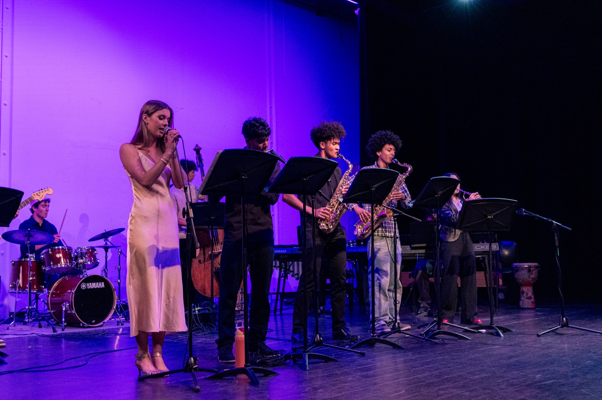
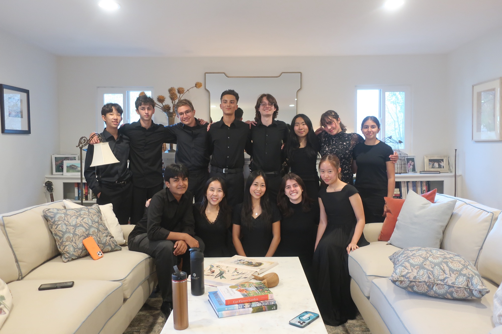

Maddie, 8
Maddie taught herself to read music and practices an hour a day. She came to us looking for a mentor to help her build proper technique.
"Sharing her passion of music with an older student/mentor."
Meaning in Music pairs children across the Bay Area with experienced high school instructors for weekly one-on-one lessons. Lessons are always free, and we loan instruments to families who need one.

Private music lessons in our area typically cost $50 to $80 an hour, and some local elementary schools have no music program at all. For many families, that puts learning an instrument out of reach.
Meaning in Music was founded in 2022 by students at The Athenian School to help close that gap. Our volunteer instructors are high school musicians with years of training who teach younger students one-on-one, every week, at no cost to families.
Read our story
Tell us your child's age, the instrument they're interested in, and any experience they have.
We speak with you and your child to learn about their goals, then match them with an instructor.
Your child meets their instructor for 30 minutes each week. If needed, we loan an instrument.
Every lesson is free. Our instructors and organizers are all student volunteers.


Our students rehearsing and performing.
Maddie taught herself to read music and practices an hour a day. She came to us looking for a mentor to help her build proper technique.
"Sharing her passion of music with an older student/mentor."
Litzy had just started flute at school and was working through the challenge of reaching the keys. She was excited to keep improving.
"How to read notes and play the flute."
Jaden's school district has no elementary music program. After trying guitar and piano online, he chose flute as something new to learn.
"Jaden wants to learn to play music with an instrument and sight read music."
Madison loves to sing and already plays ukulele. She is now learning piano and how to read music.
"Learns to read music."
Quotes are from each family's application. First names are used with permission.

Our instructors are high school students with years of private lessons, orchestra, band, and chamber music experience. Being close in age to their students helps them connect, encourage, and teach with patience.
Teaching also helps our instructors grow as leaders, as they plan lessons, track progress, and support each student week after week.
Meet our teamApplications are open to children of any age and experience level. The form takes just a few minutes.
Apply for lessonsHigh school musicians can volunteer to teach a weekly lesson and earn community service hours.
Contact usGently used violins, guitars, keyboards, and more go directly to students who need them.
Offer an instrument